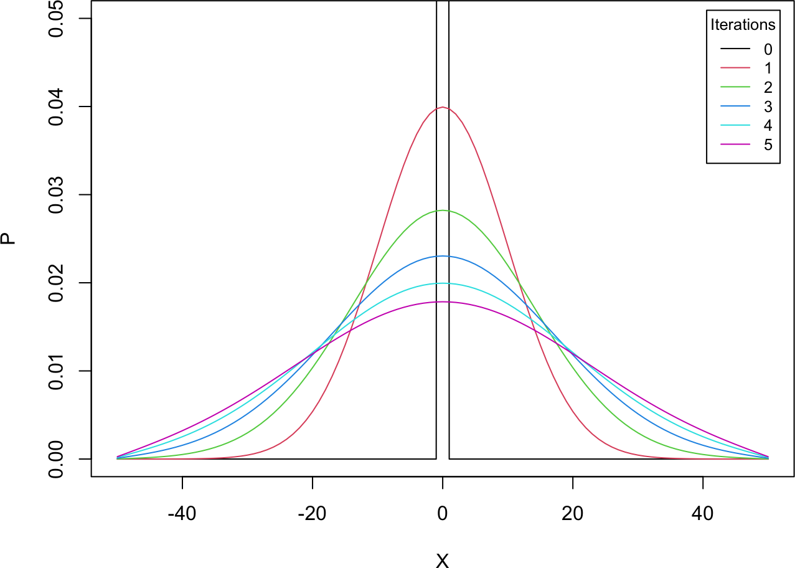
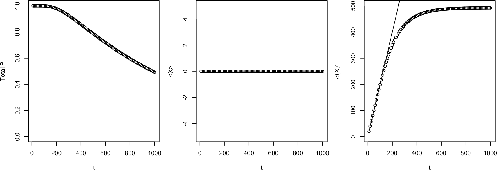
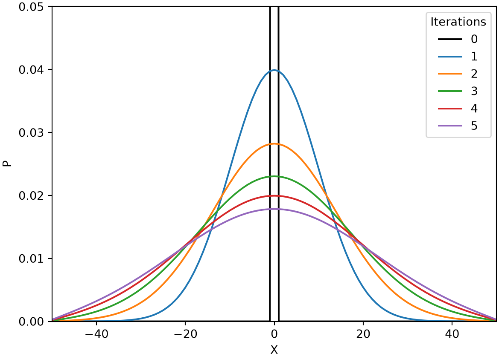
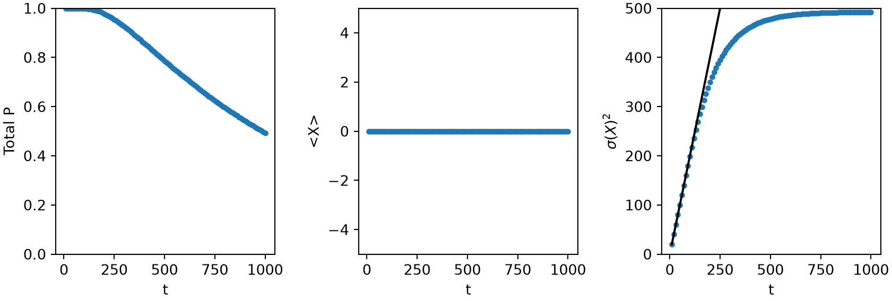
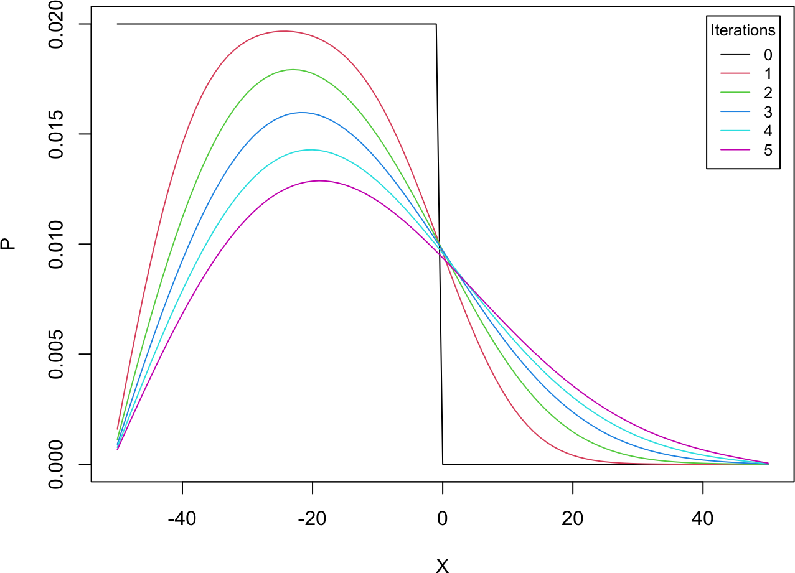
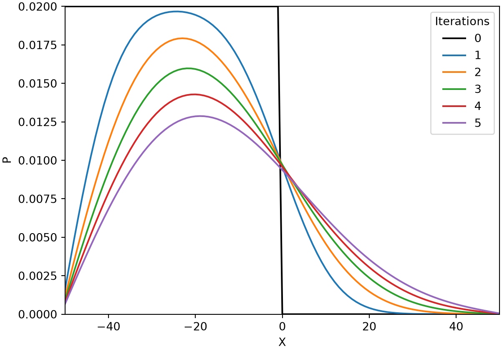

# finite-difference step for the diffusion equation, Dirichlet (P = 0) boundaries
pde_fd_diffusion <- function(ngrid, X_all, dX, dt, D, t0, t.total, p0) {
t_all <- seq(t0, t.total, by = dt); nt_all <- length(t_all)
factor <- D / dX^2 * dt
p <- p0
for (i in seq_len(nt_all - 1)) {
p_plus <- c(p[-1], 0) # P(X + dX), 0 at the right boundary
p_minus <- c(0, p[1:(ngrid-1)]) # P(X - dX), 0 at the left boundary
p <- p + factor * (p_plus + p_minus - 2 * p)
}
return(p)
}7A. Modeling diffusion
In Part 6 we modeled Brownian motion with an SDE. For a purely diffusive one-variable system,
\[ \frac{dX}{dt} = \sqrt{2D}\,\eta(t) , \tag{1} \]
with \(\eta(t)\) the Gaussian white noise, we followed a single random trajectory \(X(t)\) and recovered its statistics (\(\langle X \rangle\), \(\langle X^2 \rangle\)) from many runs. Here we take the complementary view and follow the probability distribution \(P(X, t)\) directly. It obeys the diffusion equation (Gardiner 2009),
\[ \frac{\partial P(X, t)}{\partial t} = D \frac{\partial^2 P(X, t)}{\partial X^2} , \tag{2} \]
a partial differential equation (PDE): \(P\) depends on two variables, and \(\partial P / \partial t\) is a partial derivative, taken while holding \(X\) fixed,
\[ \frac{\partial P(X, t)}{\partial t} = \lim_{\Delta t \to 0} \frac{P(X, t + \Delta t) - P(X, t)}{\Delta t} . \tag{3} \]
7A.1 The finite difference method
The most direct way to solve a PDE like Equation (2) is the finite difference method (LeVeque 2007), which replaces each derivative by a difference over a grid. Write \(P_i^n\) for the value at grid point \(X_i\) and time \(t_n = t_0 + n\,\Delta t\). A Taylor expansion in time gives a forward difference for the time derivative, accurate to \(O(\Delta t)\),
\[ \frac{\partial P}{\partial t} \approx \frac{P_i^{n+1} - P_i^n}{\Delta t} . \tag{4} \]
Adding the Taylor expansions of \(P_{i+1}^n\) and \(P_{i-1}^n\) cancels the odd-order terms and gives a centered difference for the second space derivative, accurate to \(O(\Delta X^2)\),
\[ \frac{\partial^2 P}{\partial X^2} \approx \frac{P_{i+1}^n + P_{i-1}^n - 2 P_i^n}{\Delta X^2} . \tag{5} \]
Substituting both into Equation (2) gives an explicit update, the diffusion analog of the Euler method for ODEs,
\[ P_i^{n+1} = P_i^n + D\, \frac{\Delta t}{\Delta X^2} \left( P_{i+1}^n + P_{i-1}^n - 2 P_i^n \right) . \tag{6} \]
The prefactor \(D\,\Delta t / \Delta X^2\) must stay small for stability, so the time step cannot be large relative to \(\Delta X^2\). We also need boundary and initial conditions. Here we impose a Dirichlet condition, \(P = 0\) at the two ends \(X = \pm l/2\), by padding the shifted arrays with zeros.
NoteRecipe 7A.1.1
Objective. Build the explicit finite-difference scheme for the 1D diffusion equation.
Model. The 1D diffusion equation dP/dt = D*d2P/dX2 for a distribution P(X, t), with no reaction term.
Method. The explicit forward-time centered-space finite-difference method, P_i_next = P_i + D*(dt/dX^2)*(P_{i+1} + P_{i-1} - 2*P_i), with Dirichlet boundaries (P = 0 at both ends).
Test. The generic solver pde_fd_diffusion(ngrid, X_all, dX, dt, D, ...); the stability factor D*dt/dX^2 must stay small.
Show. The distribution P advanced several finite-difference steps (exercised in 7A.2).
Verification. The scheme is the diffusion analog of Euler integration for ODEs, advancing P one time step from its neighbors.
R implementation
Python implementation
import numpy as np
import matplotlib.pyplot as plt
# finite-difference step for the diffusion equation, Dirichlet (P = 0) boundaries
def pde_fd_diffusion(ngrid, X_all, dX, dt, D, t0, t_total, p0):
t_all = np.arange(t0, t_total + dt, dt); nt_all = len(t_all)
factor = D / dX**2 * dt
p = p0.copy()
for i in range(nt_all - 1):
p_plus = np.concatenate((p[1:], [0])) # P(X + dX), 0 at the right boundary
p_minus = np.concatenate(([0], p[:-1])) # P(X - dX), 0 at the left boundary
p = p + factor * (p_plus + p_minus - 2 * p)
return p7A.2 Diffusion from the center
We start all the probability at the origin, \(P(X = 0, t = 0) = 1\), and watch it spread. On a box of size \(l = 100\) with \(\Delta X = 1\), \(\Delta t = 0.01\), and \(D = 1\), we plot the distribution after each of five successive runs.
NoteRecipe 7A.2.1
Objective. Diffuse an initially concentrated distribution and compare its spread to theory.
Model. The 1D diffusion equation dP/dt = D*d2P/dX2.
Method. The explicit finite-difference diffusion integrator (from 7A.1), tracking the mean, variance, and total probability.
Test. Domain length 100, dX = 1, dt = 0.01, D = 1; all probability initially at X = 0; compared with the theoretical variance sigma^2 = 2*D*t.
Show. A plot of P(X) spreading over time, and its variance versus t against 2*D*t.
Verification. The point distribution spreads into a widening Gaussian whose variance grows as 2*D*t at early times, while the total probability slowly leaks as the Dirichlet ends absorb it.
R implementation
l <- 100; dX <- 1; dt <- 0.01; D <- 1
ngrid <- as.integer(l / dX) + 1
X_all <- (1:ngrid - (ngrid + 1) / 2) * dX # grid, centered on 0
p0 <- numeric(ngrid)
p0[which.min(abs(X_all))] <- 1 # all probability at X = 0
plot(X_all, p0, type = "l", col = 1, xlab = "X", ylab = "P", xlim = c(-50, 50), ylim = c(0, 0.05))
p_now <- p0
for (i in 1:5) {
p_now <- pde_fd_diffusion(ngrid, X_all, dX, dt, D, t0 = 0, t.total = 50, p0 = p_now)
lines(X_all, p_now, col = i + 1)
}
legend("topright", inset = 0.02, title = "Iterations", legend = 0:5, col = 1:6, lty = 1, cex = 0.8)
Each run broadens the distribution into a wider Gaussian, exactly the spreading we saw for the random walk. To quantify it we track the mean and variance of \(X\),
\[ \begin{aligned} \langle X \rangle &= \frac{\sum_i P(X_i, t)\, X_i}{\sum_i P(X_i, t)} , \\[1mm] \langle X^2 \rangle &= \frac{\sum_i P(X_i, t)\, X_i^2}{\sum_i P(X_i, t)} , \end{aligned} \tag{7} \]
with \(\sigma^2(X) = \langle X^2 \rangle - \langle X \rangle^2\).
meanX <- function(p, X) as.numeric(p %*% X / sum(p))
sdX <- function(p, X) sqrt(as.numeric(p %*% X^2 / sum(p)) - meanX(p, X)^2)
num_sim <- 100
meanX_all <- sdX_all <- p_tot_all <- numeric(num_sim)
p_now <- p0
for (i in 1:num_sim) {
p_now <- pde_fd_diffusion(ngrid, X_all, dX, dt, D, t0 = 0, t.total = 10, p0 = p_now)
meanX_all[i] <- meanX(p_now, X_all); sdX_all[i] <- sdX(p_now, X_all); p_tot_all[i] <- sum(p_now)
}
t_all <- 10 * (1:num_sim)
par(mfrow = c(1, 3), mar = c(4, 4, 1, 1))
plot(t_all, p_tot_all, xlab = "t", ylab = "Total P", ylim = c(0, 1))
plot(t_all, meanX_all, xlab = "t", ylab = "<X>", ylim = c(-5, 5))
plot(t_all, sdX_all^2, xlab = "t", ylab = expression(sigma(X)^2), ylim = c(0, 500))
curve(2 * D * x, add = TRUE) # theory: sigma^2 = 2 D t
Python implementation
l = 100; dX = 1; dt = 0.01; D = 1
ngrid = int(l / dX) + 1
X_all = (np.arange(1, ngrid + 1) - (ngrid + 1) / 2) * dX # grid, centered on 0
p0 = np.zeros(ngrid)
p0[np.argmin(np.abs(X_all))] = 1 # all probability at X = 0
plt.plot(X_all, p0, color="black", label="0")
p_now = p0.copy()
for i in range(5):
p_now = pde_fd_diffusion(ngrid, X_all, dX, dt, D, t0=0, t_total=50, p0=p_now)
plt.plot(X_all, p_now, label=f"{i + 1}")
plt.xlabel("X"); plt.ylabel("P"); plt.xlim(-50, 50); plt.ylim(0, 0.05)Text(0.5, 0, 'X')
Text(0, 0.5, 'P')
(-50.0, 50.0)
(0.0, 0.05)plt.legend(title="Iterations", loc="upper right"); plt.show()
def meanX(p, X): return np.dot(p, X) / np.sum(p)
def sdX(p, X): return np.sqrt(np.dot(p, X**2) / np.sum(p) - meanX(p, X)**2)
num_sim = 100
meanX_all = np.zeros(num_sim); sdX_all = np.zeros(num_sim); p_tot_all = np.zeros(num_sim)
p_now = p0.copy()
for i in range(num_sim):
p_now = pde_fd_diffusion(ngrid, X_all, dX, dt, D, t0=0, t_total=10, p0=p_now)
meanX_all[i] = meanX(p_now, X_all); sdX_all[i] = sdX(p_now, X_all); p_tot_all[i] = np.sum(p_now)
t_all = 10 * np.arange(1, num_sim + 1)
fig, axs = plt.subplots(1, 3, figsize=(9, 3.2))
axs[0].plot(t_all, p_tot_all, "o", ms=3); axs[0].set(xlabel="t", ylabel="Total P", ylim=(0, 1))
axs[1].plot(t_all, meanX_all, "o", ms=3); axs[1].set(xlabel="t", ylabel="<X>", ylim=(-5, 5))
axs[2].plot(t_all, sdX_all**2, "o", ms=3); axs[2].set(xlabel="t", ylabel=r"$\sigma(X)^2$", ylim=(0, 500))
axs[2].plot(t_all, 2 * D * t_all, color="black") # theory: sigma^2 = 2 D t
plt.tight_layout(); plt.show()
The variance grows as \(\sigma^2 = 2Dt\) at early times, matching the random-walk result. The total probability, which should be conserved, slowly leaks away because the Dirichlet boundaries absorb whatever reaches the edges; once \(P\) is appreciable near the ends, the variance also grows more slowly than \(2Dt\).
7A.3 Diffusion from the left
A different initial condition places all the probability on the left half, \(P(X < 0, t = 0) = 1\) (normalized). The distribution then spreads rightward, filling the box.
R implementation
p0 <- numeric(ngrid)
p0[X_all < 0] <- 1 # all probability on the left half
p0 <- p0 / sum(p0)
plot(X_all, p0, type = "l", col = 1, xlab = "X", ylab = "P", xlim = c(-50, 50), ylim = c(0, 0.02))
p_now <- p0
for (i in 1:5) {
p_now <- pde_fd_diffusion(ngrid, X_all, dX, dt, D, t0 = 0, t.total = 50, p0 = p_now)
lines(X_all, p_now, col = i + 1)
}
legend("topright", inset = 0.02, title = "Iterations", legend = 0:5, col = 1:6, lty = 1, cex = 0.8)
Python implementation
p0 = np.zeros(ngrid)
p0[X_all < 0] = 1 # all probability on the left half
p0 = p0 / np.sum(p0)
plt.plot(X_all, p0, color="black", label="0")
p_now = p0.copy()
for i in range(5):
p_now = pde_fd_diffusion(ngrid, X_all, dX, dt, D, t0=0, t_total=50, p0=p_now)
plt.plot(X_all, p_now, label=f"{i + 1}")
plt.xlabel("X"); plt.ylabel("P"); plt.xlim(-50, 50); plt.ylim(0, 0.02)Text(0.5, 0, 'X')
Text(0, 0.5, 'P')
(-50.0, 50.0)
(0.0, 0.02)plt.legend(title="Iterations", loc="upper right"); plt.show()
The step spreads and flattens, diffusing from the filled left side toward the empty right, until it would eventually even out (were it not for the absorbing ends).
7A.4 Other boundary conditions
The Dirichlet condition (\(P = 0\) at the ends) is only one choice, and different boundaries give different dynamics. A Neumann condition instead fixes the flux by setting \(\partial P / \partial X = 0\) at each end, which prevents probability from leaking out; numerically, one copies each boundary point from its inward neighbor. Implementing it and comparing the dynamics is left as an exercise. A third choice, the periodic boundary, wraps the grid so that \(P(X_0) = P(X_n)\) and \(P(X_{n+1}) = P(X_1)\); we use it for the pattern-forming systems of Part 7C.